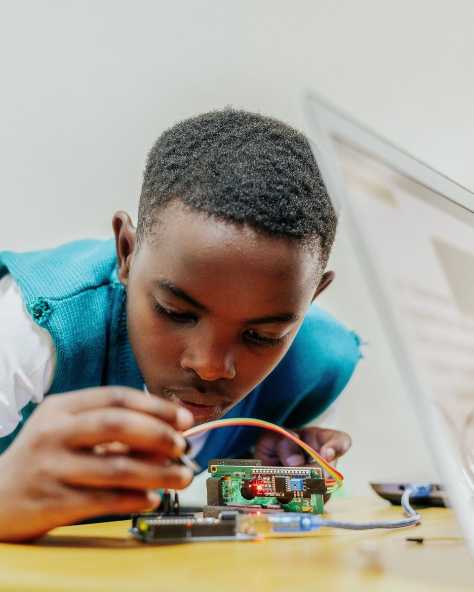
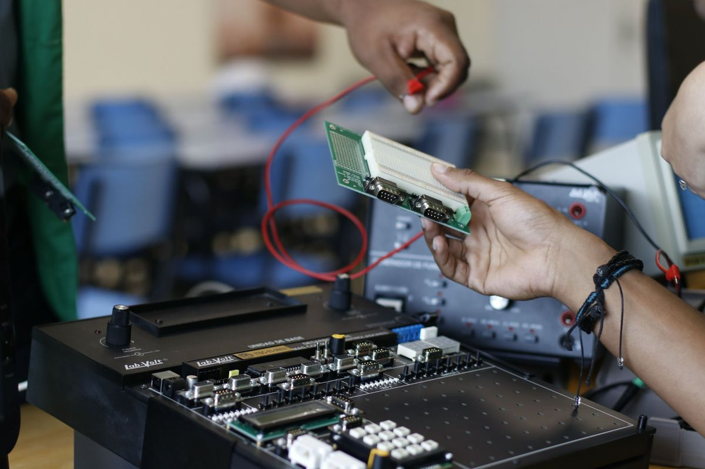
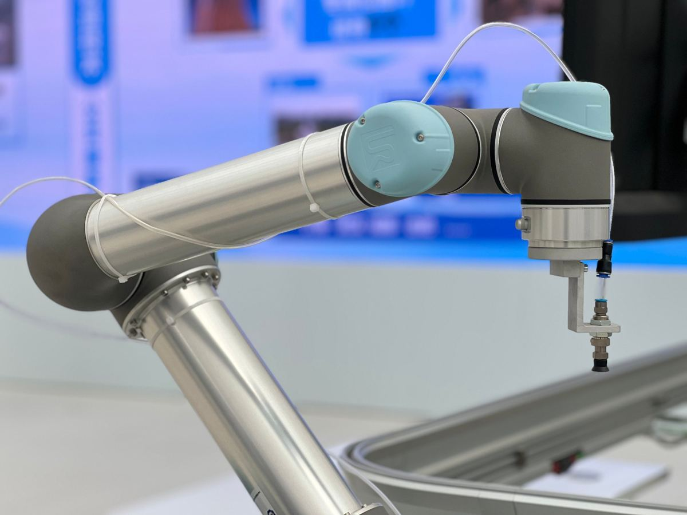
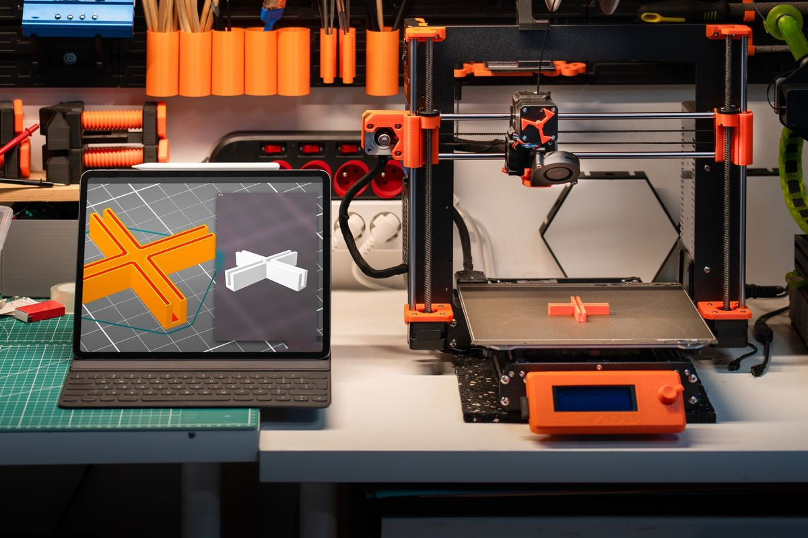
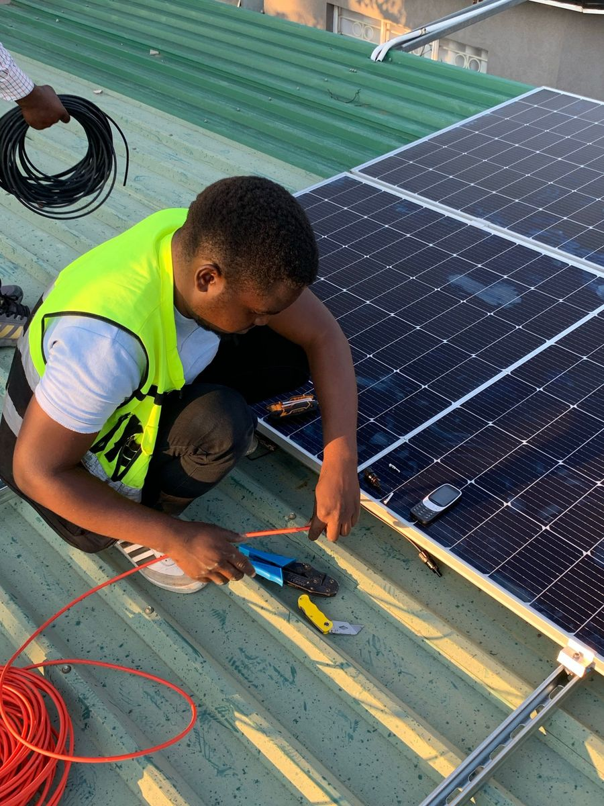
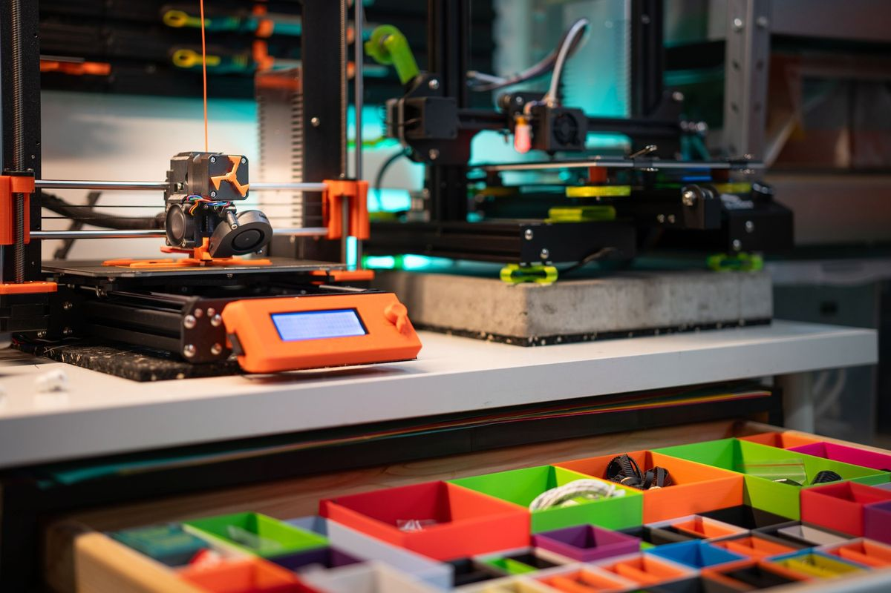
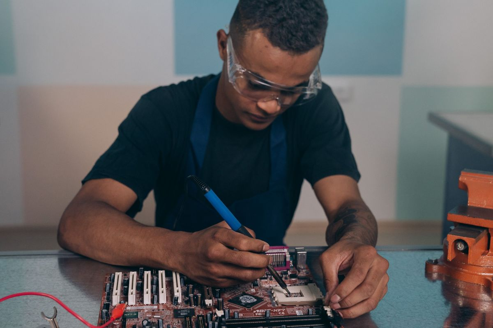

Présentation
Apprendre en fabriquant

Une formation ouverte à tous les profils
Le centre prépare aux compétences techniques recherchées par les entreprises et les institutions. La pédagogie repose sur des projets concrets réalisés au fablab : chaque apprenant conçoit, fabrique et documente ses propres réalisations.
- Étudiants de l'Université INITELEMATIQUE souhaitant compléter leur cursus par la pratique
- Jeunes diplômés à la recherche d'un premier emploi
- Professionnels souhaitant développer leurs compétences
- Personnes en reconversion professionnelle
Notre approche
Des standards internationaux, adaptés aux réalités locales
Une expertise reconnue
Les programmes sont conçus selon les standards de l'industrie et de l'enseignement supérieur, dans les domaines de l'électronique embarquée, de l'énergie, des télécommunications et des systèmes numériques.
Des méthodes éprouvées
La pédagogie reprend les pratiques des écoles d'ingénieurs et des fablabs : apprentissage par projet, mise en situation, documentation des réalisations.
Des compétences utiles sur le terrain
Les contenus répondent aux besoins concrets des entreprises et des institutions : maintenance, énergie, réseaux, fabrication et numérique.
Filières
Six filières professionnalisantes

Systèmes embarqués et IoT
- Microcontrôleurs et programmation en C
- Capteurs, actionneurs et électronique de base
- Objets connectés et transmission de données

Robotique et automatisme
- Robots mobiles : moteurs, capteurs et commande
- Automates programmables et automatismes industriels
- Bras robotisés et vision artificielle

Impression 3D et fabrication numérique
- Conception assistée par ordinateur (CAO)
- Impression 3D et découpe
- Du prototype à la petite série

Énergie
- Solaire photovoltaïque : dimensionnement et installation
- Stockage par batteries, onduleurs et réseaux électriques
- Maintenance, diagnostic et sécurité électrique
Informatique et IA
- Programmation et développement logiciel
- Intelligence artificielle et données
- Développement web et applications
- Réseaux et administration système
- Cybersécurité
Audiovisuel
- Prise de vue et prise de son
- Montage vidéo et post-production
- Production de contenus numériques et pédagogiques
Filières en développement
Maintenance industrielle · Génie électrique · Mécanique · Mécatronique
Modèle de formation
Un format hybride : en ligne et au fablab
La formation suit un format hybride éprouvé : les cours sont dispensés à distance par des ingénieurs et des formateurs issus de l'industrie, et la pratique a lieu chaque semaine au fablab, sous la conduite d'un encadrant.
Cours en ligne
Une session par module avec les formateurs partenaires, accessible en direct ou en différé.
Pratique au fablab
L'apprenant réalise l'exercice de la semaine sur les machines, accompagné par l'encadrant local.
Documentation
Chaque réalisation est documentée (photos, schémas, code) dans un portfolio personnel.
Projet final
Un projet complet, présenté devant un jury, valide la formation.
À l'issue de la formation
- Des compétences alignées sur les standards de l'industrie
- Des compétences pratiques, vérifiées sur des réalisations concrètes
- Un portfolio à présenter aux employeurs
- Une attestation de formation délivrée par le centre
- L'accès au fablab pour ses propres projets
Le fablab
Un laboratoire de fabrication au cœur de l'université
Photos non contractuelles.
Fabrication
Imprimantes 3D et outils de découpe pour le prototypage.
Électronique
Postes de soudage, instruments de mesure et cartes de développement.
Énergie
Bancs d'essai photovoltaïques pour les travaux pratiques et l'alimentation du laboratoire.
Postes informatiques
Postes dédiés aux cours en ligne, à la conception et à la programmation.


Partenaires
Un partenariat international
Ancrage local
Formation et accueil au fablab, à Bujumbura.
Expertise technique
Ingénieurs et formateurs issus de l'industrie et de l'enseignement supérieur.
Partenaires industriels
Conception et fabrication des équipements.
Entreprises, établissements, formateurs : vous souhaitez devenir partenaire ? Contactez-nous.
Une formation vous intéresse ?
Pré-inscrivez-vous dès maintenant pour être informé en priorité du calendrier des prochaines sessions.
Se pré-inscrire Accéder aux cours Nous contacter